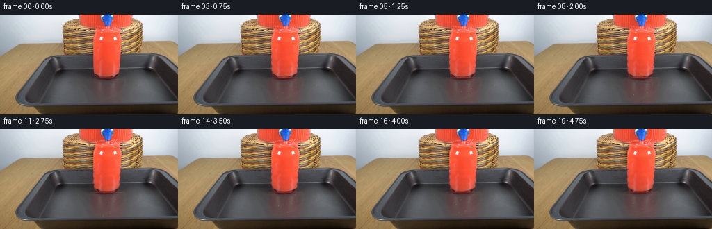
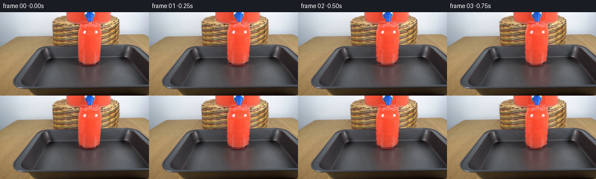

CODING AGENTS AS PIXEL WORLD MODELS
traex/DeepSeek-V4.1-Flash · 0089
点击播放 · 原生 RGB 像素
逐轮保存的候选
回放视频、检查图与代码变化。
每份候选均可单独播放。实际图片检查记录在下方工具轨迹中。
候选 01播放与检查图
点击播放 · 原生 RGB 像素


展开代码变化
--- 上一保存版本
+++ 本次保存版本
@@ -0,0 +1,236 @@
+from pathlib import Path
+
+import cv2
+import numpy as np
+from PIL import Image
+from scipy.ndimage import gaussian_filter
+
+import artifact_io
+
+
+CASE_DIR = Path(__file__).resolve().parent
+W, H = 256, 144
+FPS = 4
+N_FRAMES = 20
+
+
+def smoothstep(edge0, edge1, values):
+ t = np.clip((values - edge0) / (edge1 - edge0), 0.0, 1.0)
+ return t * t * (3.0 - 2.0 * t)
+
+
+def glass_widths(y):
+ """Interior walls of the small drinking glass, in source-image coordinates."""
+ keys_y = np.array([86, 88, 90, 94, 100, 110, 120, 126, 128], dtype=np.float32)
+ keys_l = np.array([130, 128, 127, 126, 125, 126, 130, 136, 148], dtype=np.float32)
+ keys_r = np.array([176, 178, 179, 180, 180, 180, 179, 176, 174], dtype=np.float32)
+ left = np.interp(y, keys_y, keys_l)
+ right = np.interp(y, keys_y, keys_r)
+ return left, right
+
+
+def build_masks():
+ yy, xx = np.mgrid[0:H, 0:W].astype(np.float32)
+ left, right = glass_widths(yy)
+ wall_softness = 0.85
+ inside_x = smoothstep(left - wall_softness, left + wall_softness, xx)
+ inside_x *= 1.0 - smoothstep(right - wall_softness, right + wall_softness, xx)
+ top = smoothstep(85.5, 87.0, yy)
+ bottom = 1.0 - smoothstep(127.0, 128.2, yy)
+ glass = inside_x * top * bottom
+
+ # Exclude the glass walls themselves from color changes.
+ interior_x = smoothstep(left + 1.2, left + 2.2, xx)
+ interior_x *= 1.0 - smoothstep(right - 2.2, right - 1.2, xx)
+ interior = interior_x * smoothstep(88.0, 89.4, yy)
+ interior *= 1.0 - smoothstep(126.5, 127.5, yy)
+
+ return yy, xx, glass, interior
+
+
+def fluid_alpha(base, strength, radius=1.0):
+ red = base[..., 0] - 0.51 * base[..., 1] - 0.49 * base[..., 2]
+ alpha = smoothstep(5.0, 26.0, red)
+ if radius > 0:
+ alpha = gaussian_filter(alpha, radius)
+ return np.clip(alpha, 0.0, 1.0)
+
+
+def apply_dispenser_motion(base, t, red_alpha, yy, xx):
+ """Subtle, downward-travelling shading inside the dispenser's red liquid."""
+ out = base.copy()
+ body = (yy < 57.5) & (xx > 55) & (xx < 206)
+ alpha = red_alpha * body
+ if np.max(alpha) <= 0:
+ return out
+
+ phase = 2.0 * np.pi * (yy / 19.0 - 0.32 * t)
+ cross = 0.55 * np.sin(xx / 4.1 + 0.75 * t)
+ wave = np.sin(phase + cross)
+ center = 153.0 + 0.7 * np.sin(0.8 * t)
+ core = np.exp(-((xx - center) / 10.5) ** 2)
+ light = 0.035 * wave + 0.020 * core * np.sin(phase * 0.7 + 0.9)
+ out += alpha[..., None] * light[..., None] * np.array([34.0, 13.0, 8.0], dtype=np.float32)
+
+ # A single moving caustic keeps the otherwise static vessel alive.
+ caustic_y = 13.0 + 10.5 * ((0.26 * t + 0.10) % 1.0)
+ caustic = np.exp(-((yy - caustic_y) / 1.4) ** 2)
+ caustic *= np.exp(-((xx - 148.0) / 8.0) ** 2)
+ out += (alpha * caustic)[..., None] * np.array([20.0, 10.0, 6.0], dtype=np.float32)
+ return out
+
+
+def apply_stream_motion(base, t, red_alpha, yy, xx):
+ out = base.copy()
+ roi = (yy >= 54.0) & (yy <= 93.0) & (xx >= 126.0) & (xx <= 181.0)
+ alpha = red_alpha * roi
+
+ # Refract the stream texture with a tiny travelling lateral displacement.
+ phase = 2.0 * np.pi * (yy / 9.0 - 1.85 * t)
+ map_x = xx + 0.72 * np.sin(phase + 0.22 * np.sin(xx / 3.2 + t))
+ map_y = yy - 0.28 * np.sin(phase * 0.62 + xx / 6.0)
+ warped = cv2.remap(
+ out,
+ map_x.astype(np.float32),
+ map_y.astype(np.float32),
+ interpolation=cv2.INTER_LINEAR,
+ borderMode=cv2.BORDER_REFLECT_101,
+ )
+ out = out * (1.0 - 0.78 * alpha[..., None]) + warped * (0.78 * alpha[..., None])
+
+ flow = np.sin(2.0 * np.pi * (yy / 8.8 - 2.35 * t) + 0.75 * np.sin(xx / 3.6))
+ streak = 0.5 + 0.5 * np.sin(2.0 * np.pi * (yy / 13.0 - 1.45 * t) + 0.35 * xx)
+ core = np.exp(-((xx - (152.5 + 1.2 * np.sin(yy / 7.0 + 1.2 * t))) / 7.8) ** 2)
+ gain = 0.046 * flow + 0.020 * streak + 0.034 * core * (0.55 + 0.45 * flow)
+ out += alpha[..., None] * gain[..., None] * np.array([38.0, 14.0, 9.0], dtype=np.float32)
+ return out
+
+
+def add_bubbles(out, t, interior, level):
+ bubbles = [
+ (143.0, 0.10, 0.65, 22.0, 0.70),
+ (151.0, 0.34, 0.80, 19.0, 0.55),
+ (162.0, 0.22, 0.72, 24.0, 0.62),
+ (169.0, 0.58, 0.58, 16.0, 0.50),
+ (147.0, 0.73, 0.72, 27.0, 0.45),
+ (157.0, 0.82, 0.86, 20.0, 0.60),
+ (165.0, 0.48, 0.55, 18.0, 0.44),
+ ]
+ yy, xx = np.mgrid[0:H, 0:W].astype(np.float32)
+ for x0, phase, radius, rise, opacity in bubbles:
+ travel = (phase + 0.105 * t) % 1.0
+ cy = 125.0 - travel * (125.0 - max(level + 2.0, 94.0))
+ cx = x0 + 1.15 * np.sin(1.8 * t + phase * 8.0 + cy / 8.0)
+ d2 = ((xx - cx) / (radius + 0.12)) ** 2 + ((yy - cy) / (radius * 0.86)) ** 2
+ rim = np.exp(-((np.sqrt(d2) - 0.72) / 0.30) ** 2)
+ glint = np.exp(-((xx - cx + 0.25) ** 2 + (yy - cy + 0.28) ** 2) / 0.18)
+ mask = interior * rim
+ out += mask[..., None] * opacity * np.array([35.0, 20.0, 18.0], dtype=np.float32)
+ out += (interior * glint * 0.32)[..., None] * np.array([48.0, 35.0, 30.0], dtype=np.float32)
+ return out
+
+
+def apply_glass_fill(base, t, yy, xx, glass, interior, red_alpha):
+ out = base.copy()
+
+ # The first frame already shows a nearly full glass. Let the meniscus creep
+ # upward while retaining the original rim and liquid color.
+ progress = np.clip(t / (N_FRAMES - 1), 0.0, 1.0)
+ ease = progress * progress * (3.0 - 2.0 * progress)
+ level = 90.55 - 3.15 * ease + 0.08 * np.sin(2.0 * np.pi * (0.42 * t + 0.08))
+
+ depth = np.maximum(level - yy, 0.0)
+ fluid = interior * smoothstep(level - 0.20, level + 0.55, yy)
+
+ # A shallow refraction shift and warm transmission make the filled volume
+ # read as red liquid rather than a flat tint.
+ local_dx = 0.44 * np.sin(yy / 5.2 + 1.25 * t)
+ local_dx += 0.18 * np.sin(yy / 2.4 - 2.1 * t)
+ local_dy = 0.16 * np.sin(xx / 8.5 + 1.7 * t)
+ refracted = cv2.remap(
+ out,
+ (xx + local_dx).astype(np.float32),
+ (yy + local_dy).astype(np.float32),
+ interpolation=cv2.INTER_LINEAR,
+ borderMode=cv2.BORDER_REFLECT_101,
+ )
+ out = out * (1.0 - 0.34 * fluid[..., None]) + refracted * (0.34 * fluid[..., None])
+
+ depth_norm = np.clip(depth / 34.0, 0.0, 1.0)
+ body_alpha = fluid * (0.045 + 0.105 * depth_norm)
+ liquid_color = np.array([214.0, 51.0, 40.0], dtype=np.float32)
+ out = out * (1.0 - body_alpha[..., None]) + liquid_color * body_alpha[..., None]
+
+ # Internal red transmission is strongest near the stream and along the
+ # right-hand caustic, matching the warm cast in the source frame.
+ core = np.exp(-((xx - 155.0 - 0.8 * np.sin(yy / 7.0 + t)) / 11.0) ** 2)
+ right_caustic = np.exp(-((xx - 169.0) / 4.0) ** 2)
+ transmission = fluid * (0.032 * core + 0.020 * right_caustic)
+ out += transmission[..., None] * np.array([56.0, 16.0, 11.0], dtype=np.float32)
+
+ # Meniscus: a bright top edge with a darker underside and a broken foam lip.
+ surface_band = np.exp(-((yy - level) / 0.78) ** 2) * interior
+ underside = np.exp(-((yy - (level + 1.45)) / 0.70) ** 2) * interior
+ width_mod = np.exp(-((xx - 153.0) / 23.0) ** 4)
+ out += (surface_band * width_mod * 0.31)[..., None] * np.array([92.0, 39.0, 30.0], dtype=np.float32)
+ out -= (underside * width_mod * 0.12)[..., None] * np.array([23.0, 12.0, 11.0], dtype=np.float32)
+
+ # Concentric impact ripples travel outward from the point where the stream
+ # meets the free surface.
+ radius = np.sqrt(((xx - 154.0) / 17.5) ** 2 + ((yy - level) / 2.5) ** 2)
+ ripple = np.cos(2.0 * np.pi * (radius - 0.40 * t))
+ ripple *= np.exp(-((radius - (0.35 + 0.09 * t)) / 0.42) ** 2)
+ ripple *= np.exp(-((yy - level) / 2.4) ** 2) * interior
+ out += ripple[..., None] * 0.095 * np.array([66.0, 28.0, 21.0], dtype=np.float32)
+
+ # Small foam beads at the strike point. Their positions pulse gently but do
+ # not detach from the surface.
+ foam = np.zeros((H, W), dtype=np.float32)
+ for i, (dx, dy, rad) in enumerate(
+ [(-5.0, -0.3, 0.75), (-2.3, -0.8, 0.62), (0.5, -0.4, 0.82), (3.2, -0.9, 0.62), (6.0, -0.2, 0.70)]
+ ):
+ cx = 154.0 + dx + 0.55 * np.sin(2.2 * t + i * 1.7)
+ cy = level + dy + 0.25 * np.sin(2.8 * t + i)
+ foam += np.exp(-(((xx - cx) ** 2 + (yy - cy) ** 2) / (rad * rad)))
+ foam = np.clip(foam, 0.0, 1.0) * interior
+ out += foam[..., None] * 0.22 * np.array([110.0, 56.0, 44.0], dtype=np.float32)
+
+ out = add_bubbles(out, t, interior, level)
+
+ # Preserve the existing stream just above the moving surface, and suppress
+ # any old red pixels that would otherwise remain below the meniscus.
+ stream_cut = (yy > level + 1.1) & (yy < 92.0) & (xx >= 133.0) & (xx <= 174.0)
+ stream_cut &= red_alpha > 0.25
+ replacement = base * 0.55 + out * 0.45
+ out = np.where(stream_cut[..., None], replacement, out)
+ return out, level
+
+
+def render_frame(base, t):
+ yy, xx, glass, interior = build_masks()
+ red_alpha = fluid_alpha(base, 5.0, radius=0.55)
+ out = apply_dispenser_motion(base, t, red_alpha, yy, xx)
+ out = apply_stream_motion(out, t, red_alpha, yy, xx)
+ out, _ = apply_glass_fill(out, t, yy, xx, glass, interior, red_alpha)
+
+ # Keep the locked-off scene crisp at the original resolution.
+ return np.clip(np.rint(out), 0, 255).astype(np.uint8)
+
+
+def main():
+ source = np.asarray(Image.open(CASE_DIR / "first_frame.png").convert("RGB"), dtype=np.uint8)
+ if source.shape != (H, W, 3):
+ raise ValueError(f"Expected {(H, W, 3)}, got {source.shape}")
+
+ frames = [source.copy()]
+ for index in range(1, N_FRAMES):
+ t = index / FPS
+ frames.append(render_frame(source.astype(np.float32), t))
+ frames = np.stack(frames)
+
+ artifact_io.save(frames, CASE_DIR)
+ print(f"Saved {len(frames)} frames at {W}x{H}, {FPS} fps")
+
+
+if __name__ == "__main__":
+ main()
候选 02播放与检查图
点击播放 · 原生 RGB 像素

展开代码变化
--- 上一保存版本
+++ 本次保存版本
@@ -70,13 +70,13 @@
center = 153.0 + 0.7 * np.sin(0.8 * t)
core = np.exp(-((xx - center) / 10.5) ** 2)
light = 0.035 * wave + 0.020 * core * np.sin(phase * 0.7 + 0.9)
- out += alpha[..., None] * light[..., None] * np.array([34.0, 13.0, 8.0], dtype=np.float32)
+ out += alpha[..., None] * light[..., None] * np.array([24.0, 9.0, 6.0], dtype=np.float32)
# A single moving caustic keeps the otherwise static vessel alive.
caustic_y = 13.0 + 10.5 * ((0.26 * t + 0.10) % 1.0)
caustic = np.exp(-((yy - caustic_y) / 1.4) ** 2)
caustic *= np.exp(-((xx - 148.0) / 8.0) ** 2)
- out += (alpha * caustic)[..., None] * np.array([20.0, 10.0, 6.0], dtype=np.float32)
+ out += (alpha * caustic)[..., None] * np.array([14.0, 7.0, 4.0], dtype=np.float32)
return out
@@ -135,9 +135,9 @@
# The first frame already shows a nearly full glass. Let the meniscus creep
# upward while retaining the original rim and liquid color.
- progress = np.clip(t / (N_FRAMES - 1), 0.0, 1.0)
+ progress = np.clip(t / ((N_FRAMES - 1) / FPS), 0.0, 1.0)
ease = progress * progress * (3.0 - 2.0 * progress)
- level = 90.55 - 3.15 * ease + 0.08 * np.sin(2.0 * np.pi * (0.42 * t + 0.08))
+ level = 90.55 - 4.25 * ease + 0.08 * np.sin(2.0 * np.pi * (0.42 * t + 0.08))
depth = np.maximum(level - yy, 0.0)
fluid = interior * smoothstep(level - 0.20, level + 0.55, yy)
@@ -157,16 +157,18 @@
out = out * (1.0 - 0.34 * fluid[..., None]) + refracted * (0.34 * fluid[..., None])
depth_norm = np.clip(depth / 34.0, 0.0, 1.0)
- body_alpha = fluid * (0.045 + 0.105 * depth_norm)
- liquid_color = np.array([214.0, 51.0, 40.0], dtype=np.float32)
+ body_alpha = fluid * (0.035 + 0.13 * depth_norm)
+ top_color = np.array([166.0, 54.0, 47.0], dtype=np.float32)
+ bottom_color = np.array([116.0, 37.0, 35.0], dtype=np.float32)
+ liquid_color = top_color + depth_norm[..., None] * (bottom_color - top_color)
out = out * (1.0 - body_alpha[..., None]) + liquid_color * body_alpha[..., None]
# Internal red transmission is strongest near the stream and along the
# right-hand caustic, matching the warm cast in the source frame.
core = np.exp(-((xx - 155.0 - 0.8 * np.sin(yy / 7.0 + t)) / 11.0) ** 2)
right_caustic = np.exp(-((xx - 169.0) / 4.0) ** 2)
- transmission = fluid * (0.032 * core + 0.020 * right_caustic)
- out += transmission[..., None] * np.array([56.0, 16.0, 11.0], dtype=np.float32)
+ transmission = fluid * (0.024 * core + 0.013 * right_caustic)
+ out += transmission[..., None] * np.array([44.0, 12.0, 8.0], dtype=np.float32)
# Meniscus: a bright top edge with a darker underside and a broken foam lip.
surface_band = np.exp(-((yy - level) / 0.78) ** 2) * interior
候选 03播放与检查图
可观测工具轨迹
实际执行的命令与返回图片。
命令 1exit 0
/bin/bash -c "pwd && rg --files -g '"'!*.git*'"' | sed -n '1,200p'"
命令 2exit 0
/bin/bash -c "sed -n '1,240p' prompt.txt"
命令 3exit 0
/bin/bash -c "sed -n '1,280p' GENERATION_RULES.md"
命令 4exit 0
/bin/bash -c 'file first_frame.png && identify first_frame.png 2>/dev/null || true && ls -lah'
命令 5exit 0
/bin/bash -c "sed -n '1,260p' artifact_io.py"
命令 6exit 0
/bin/bash -c "sed -n '1,260p' player_template.html"
命令 7exit 0
/bin/bash -c "python3 - <<'PY'
from PIL import Image
import numpy as np
im=Image.open('first_frame.png').convert('RGB')
a=np.asarray(im)
print('size',im.size,'mode',im.mode,'dtype',a.dtype)
print('min/max/mean',a.min((0,1)),a.max((0,1)),a.mean((0,1)))
print('unique colors',len(np.unique(a.reshape(-1,3),axis=0)))
# dominant quantized colors
q=(a//16)*16
u,c=np.unique(q.reshape(-1,3),axis=0,return_counts=True)
for i in np.argsort(c)[-20:][::-1]: print(tuple(u[i]), int(c[i]))
PY"命令 8exit 0
/bin/bash -c "python3 - <<'PY'
from PIL import Image
import numpy as np
im=np.array(Image.open('first_frame.png').convert('RGB')).astype(float)
r,g,b=im[:,:,0],im[:,:,1],im[:,:,2]
mx=im.max(2); mn=im.min(2); sat=mx-mn; lum=im.mean(2)
red=(r>100)&(r>g*1.35)&(r>b*1.35)&(sat>35)
white=(lum>185)&(sat<45)
dark=(lum<55)
blue=(b>r*1.12)&(b>g*1.03)&(lum>65)
brown=(r>g*1.08)&(g>b*1.18)&(lum>45)&(lum<180)
# coverage rows and bboxes
for name,m in [('red',red),('white',white),('dark',dark),('blue',blue),('brown',brown)]:
ys,xs=np.where(m)
print(name,len(xs),'bbox', (xs.min(),ys.min(),xs.max(),ys.max()) if len(xs) else None)
# classify 128x72, each char 2x2. Priority red > white > blue > brown > dark
chars=[]
for y in range(0,144,2):
row=''
for x in range(0,256,2):
blocks=[(red, 'R'),(white,'W'),(blue,'B'),(brown,'y'),(dark,'#')]
counts=[m[y:y+2,x:x+2].sum() for m,c in blocks]
if max(counts)>=2: row+=blocks[int(np.argmax(counts))][1]
else:
l=lum[y:y+2,x:x+2].mean()
row += ' ' if l>190 else '.' if l>145 else ':' if l>100 else '-' if l>60 else '#'
chars.append(row)
for i,row in enumerate(chars): print(f'{i*2:03d} '+row)
PY"命令 9exit 0
/bin/bash -c "python3 - <<'PY'
from PIL import Image
import numpy as np
from scipy import ndimage as ndi
im=np.asarray(Image.open('first_frame.png').convert('RGB')).astype(float)
r,g,b=im[:,:,0],im[:,:,1],im[:,:,2]; mx=im.max(2);mn=im.min(2);sat=mx-mn;lum=im.mean(2)
masks={
'redstrong':(r>130)&(r>g*1.5)&(r>b*1.5)&(sat>50),
'red':(r>90)&(r>g*1.35)&(r>b*1.35)&(sat>30),
'dark':lum<55,
'white':(lum>190)&(sat<45),
'brown':(r>g*1.05)&(g>b*1.2)&(lum>40)&(lum<190),
'blue':(b>r*1.08)&(b>g*1.02)&(lum>60)
}
for name,m in masks.items():
lab,n=ndi.label(m,structure=np.ones((3,3)))
objs=ndi.find_objects(lab)
comps=[]
for i,sl in enumerate(objs,1):
if sl:
count=(lab[sl]==i).sum()
if count>=8:
comps.append((count,sl[1].start,sl[0].start,sl[1].stop-1,sl[0].stop-1))
comps.sort(reverse=True)
print('\\n',name,len(comps))
for c in comps[:20]: print(c)
PY"命令 10exit 0
/bin/bash -c "python3 - <<'PY'
from PIL import Image
import numpy as np
im=np.asarray(Image.open('first_frame.png').convert('RGB'))
# print horizontal pixel samples in x=85..210 every 4 px, y rows 60..130
for y in [55,60,65,70,75,80,85,90,95,100,105,110,115,120,125,130,135]:
s=''
for x in range(80,216,4):
r,g,b=im[y,x]; l=(int(r)+int(g)+int(b))/3
if r>120 and r>g*1.4: c='R'
elif l>200: c='W'
elif b>r*1.1 and b>g: c='B'
elif l>150: c='.'
elif l>100: c=':'
elif l>55: c='-'
else: c='#'
s+=c
print(y,s)
# edge strength at each x/y for central
lum=im.mean(2)
gx=np.abs(np.diff(lum,axis=1)); gy=np.abs(np.diff(lum,axis=0))
print('vertical edge sums x')
for x in range(80,216,4): print(x,round(gx[40:140,x].mean(),1),end='; ')
print()
PY"命令 11exit 0
/bin/bash -c "python3 - <<'PY'
from PIL import Image
import numpy as np
im=np.asarray(Image.open('first_frame.png').convert('RGB')).astype(float)
lum=im.mean(2); sat=im.max(2)-im.min(2)
# Edge outlines in central crop (x 40:230 y 45:140) with 2px blocks
for y in range(44,140,2):
row=''
for x in range(40,230,2):
p=im[y:y+2,x:x+2]
l=p.mean(); s=p.max(2).mean()-p.min(2).mean(); r,g,b=p.mean((0,1))
if r>100 and r>g*1.35 and r>b*1.3 and s>30: c='R'
elif l>200 and s<35: c='W'
elif b>r*1.1 and b>g*1.02 and l>60: c='B'
elif l>175: c='.'
elif l>135: c=':'
elif l>95: c='-'
elif l>60: c='='
elif l>35: c='+'
else: c='#'
row+=c
print(f'{y:03d} {row}')
PY"命令 12exit 0
/bin/bash -c "python3 - <<'PY'
from PIL import Image
import numpy as np
im=np.asarray(Image.open('first_frame.png').convert('RGB')).astype(float)
for x in [90,95,100,105,110,115,120,125,130,135,140,145,150,155,160,165,170,175,180,185,190,195,200,205]:
vals=[]
for y in range(45,136,5):
r,g,b=im[y,x]
if r>120 and r>g*1.4 and r>b*1.3: c='R'
elif b>r*1.1 and b>g*1.02: c='B'
elif (r+g+b)/3>190: c='W'
else: c='.'
vals.append(c)
print(f'{x:3d} '+''.join(vals))
PY"命令 13exit 0
/bin/bash -c "python3 - <<'PY'
from PIL import Image
import numpy as np
im=np.asarray(Image.open('first_frame.png').convert('RGB')).astype(float)
# print all scan rows as ascii only red columns bounds and brightness around center
for y in range(0,144,2):
r,g,b=im[y].T
red=(r>100)&(r>g*1.35)&(r>b*1.3)
xs=np.where(red)[0]
groups=[]
if len(xs):
cuts=np.r_[0,np.where(np.diff(xs)>1)[0]+1,len(xs)]
for a,b in zip(cuts[:-1],cuts[1:]):
if b-a>=2: groups.append((int(xs[a]),int(xs[b-1])))
print(f'{y:03d}',groups)
PY"命令 14exit 0
/bin/bash -c "python3 - <<'PY'
from PIL import Image
import numpy as np
im=np.asarray(Image.open('first_frame.png').convert('RGB')).astype(float)
# inspect row/col line brightness ranges; local edge image via Sobel approximated
lum=im.mean(2)
gx=np.zeros_like(lum); gy=np.zeros_like(lum)
gx[:,1:-1]=(lum[:,2:]-lum[:,:-2])/2; gy[1:-1]=(lum[2:]-lum[:-2])/2
mag=np.hypot(gx,gy)
# list strongest horizontal and vertical edge coordinates in central object region
for name,arr in [('vx',mag[60:132].mean(0)),('hy',mag[:,70:220].mean(1))]:
idx=np.argsort(arr)[-40:][::-1]
print(name,[(int(i),round(float(arr[i]),1)) for i in idx[:30]])
PY"命令 15exit 0
/bin/bash -c "python3 - <<'PY'
from PIL import Image
import numpy as np
im=np.asarray(Image.open('first_frame.png').convert('RGB')).astype(float)
# sample central region background/liquid average and median by row, red fraction
for y in range(50,132,2):
row=im[y,60:210]
r,g,b=row.T
red=(r>100)&(r>g*1.35)&(r>b*1.3)
print(f'{y:03d} red={red.sum():3d} med={np.median(row,0).round().astype(int)} mean={row.mean(0).round().astype(int)}')
# red pixels stats
r,g,b=im[:,:,0],im[:,:,1],im[:,:,2]
red=(r>130)&(r>g*1.5)&(r>b*1.5)
vals=im[red]
print('red',len(vals),'median',np.median(vals,0),'mean',vals.mean(0),'q10',np.percentile(vals,10,axis=0),'q90',np.percentile(vals,90,axis=0))
# glass area x 120..190 y 85..125 stats
for box in [(120,85,190,125),(135,58,172,90),(110,95,190,125)]:
x0,y0,x1,y1=box;p=im[y0:y1,x0:x1]
print(box,'med',np.median(p.reshape(-1,3),0),'mean',p.mean((0,1)))
PY"命令 16exit 0
/bin/bash -c "python3 - <<'PY'
from PIL import Image
import numpy as np
im=np.asarray(Image.open('first_frame.png').convert('RGB'))
# 128x72 luminance ascii using 2x2 blocks
chars=' .:-=+*#%@'
for y in range(0,144,2):
row=''
for x in range(0,256,2):
p=im[y:y+2,x:x+2].mean()
row += chars[min(9,int(p/256*10))]
print(row)
PY"命令 17exit 0
/bin/bash -c "python3 - <<'PY'
from PIL import Image
import numpy as np
im=np.asarray(Image.open('first_frame.png').convert('RGB')).astype(float)
for y in range(0,144,2):
row=''
for x in range(0,256,2):
p=im[y:y+2,x:x+2].mean((0,1)); r,g,b=p
mx=max(p);mn=min(p);l=p.mean();s=mx-mn
if r>110 and r>g*1.35 and r>b*1.3 and s>30: c='R'
elif r>50 and r>g*1.35 and r>b*1.3 and s>18: c='r'
elif b>r*1.12 and b>g*1.03 and l>50: c='B'
elif l>205 and s<38: c='W'
elif l>160 and s<35: c='w'
elif r>g*1.08 and g>b*1.15 and l>45: c='y'
elif l>120 and s<35: c='g'
elif l>70 and s<35: c='G'
elif l>35 and s<35: c='K'
else: c='.'
row+=c
print(f'{y:03d} '+row)
PY"命令 18exit 0
/bin/bash -c "python3 - <<'PY'
from PIL import Image
import numpy as np
im=np.asarray(Image.open('first_frame.png').convert('RGB')).astype(float)
# per-row median RGB at x ranges and red center max
for y in range(0,144,2):
vals=[]
for a,b in [(0,60),(60,100),(100,130),(130,175),(175,210),(210,256)]:
p=im[y,a:b]; vals.append(tuple(np.median(p,0).astype(int)))
print(y,vals)
PY"命令 19exit 0
/bin/bash -c "python3 - <<'PY'
from PIL import Image
import numpy as np
im=np.asarray(Image.open('first_frame.png').convert('RGB')).astype(float)
# exact ascii crop, each char = 1 px, x100..205 y50..132, color categories
for y in range(50,132):
row=''
for x in range(100,206):
r,g,b=im[y,x];l=(r+g+b)/3;s=max(r,g,b)-min(r,g,b)
if r>110 and r>g*1.35 and r>b*1.3 and s>30:c='R'
elif r>70 and r>g*1.3 and r>b*1.3 and s>15:c='r'
elif b>r*1.1 and b>g*1.02 and l>55:c='B'
elif l>205:c='W'
elif l>160:c='.'
elif l>120:c=':'
elif l>85:c='-'
elif l>55:c='='
elif l>30:c='+'
else:c='#'
row+=c
print(f'{y:03d} {row}')
PY"命令 20exit 0
/bin/bash -c "python3 - <<'PY'
from PIL import Image
import numpy as np
im=np.asarray(Image.open('first_frame.png').convert('RGB'))
# save enlarged crops for numeric inspection through image stats? use PIL nearest and save temporary sheets
for name,box in [('center',(80,40,215,135)),('dispenser',(105,0,200,70)),('glass',(115,75,195,135)),('top',(0,0,256,60))]:
Image.fromarray(im).crop(box).resize(((box[2]-box[0])*4,(box[3]-box[1])*4),Image.Resampling.NEAREST).save('.tmp/'+name+'.png')
# print image center row/col gradients and maybe detect boundaries by gradient magnitude
lum=im.astype(float).mean(2)
# prominent horizontal edge at each y in x 120..190
print('horizontal edges central')
for y in range(40,132):
gx=np.abs(np.diff(lum[y,110:200])).mean()
if gx>4: print(y,round(gx,1))
PY"命令 21exit 0
/bin/bash -c "python3 - <<'PY'
from PIL import Image
import numpy as np
im=np.asarray(Image.open('first_frame.png').convert('RGB')).astype(float)
# Use alpha/highlights to map surfaces: print per pixel central at x=145 and x=175 and y scan
for x in [115,120,125,130,135,140,145,150,155,160,165,170,175,180,185,190]:
vals=[]
for y in range(50,132,3):
r,g,b=im[y,x]
vals.append(f'{int(r):02x}{int(g):02x}{int(b):02x}')
print('x',x,' '.join(vals))
# gradients in x at selected y
for y in [55,58,70,80,85,88,90,92,95,100,110,120,128,130]:
d=np.abs(np.diff(im[y].mean(1)))
inds=np.where(d>10)[0]
print('y',y,[(int(i),round(float(d[i]),1)) for i in inds[:50]])
PY"命令 22exit 0
/bin/bash -c "python3 - <<'PY'
from PIL import Image
import numpy as np
im=np.asarray(Image.open('first_frame.png').convert('RGB')).astype(float)
# Compare high-level spatial regions from pixel samples: print RGB values on grid x=0..255 step 16, y=0..143 step 8
for y in range(0,144,8):
print('y',y)
for x in range(0,256,16):
print(f'{x:3}:{tuple(im[y:y+8,x:x+16].mean((0,1)).astype(int))}',end=' ')
print()
PY"命令 23exit 0
/bin/bash -c "python3 - <<'PY'
from PIL import Image
import numpy as np
im=np.asarray(Image.open('first_frame.png').convert('RGB')).astype(float)
# red mask boundaries and stats at key x
for x in [128,130,132,133,134,135,136,137,138,139,140,145,150,155,160,165,168,170,171,172,173,174,175,180,185,190,195,200]:
ys=[]
for y in range(144):
r,g,b=im[y,x]
if r>110 and r>g*1.35 and r>b*1.3 and (max(r,g,b)-min(r,g,b))>30:ys.append(y)
# groups
groups=[]
if ys:
cuts=np.r_[0,np.where(np.diff(ys)>1)[0]+1,len(ys)]
for a,b in zip(cuts[:-1],cuts[1:]):
if b-a>=2: groups.append((ys[a],ys[b-1]))
print(x,groups)
# Color percentile of red central stream x134..173
p=im[55:92,134:174]
r,g,b=p[:,:,0],p[:,:,1],p[:,:,2]
m=(r>110)&(r>g*1.35)&(r>b*1.3)
v=p[m]
print('stream n',len(v),'med',np.median(v,0),'mean',v.mean(0),'percentiles',[(q,np.percentile(v,q,axis=0).astype(int)) for q in [5,25,50,75,95]])
PY"命令 24exit 0
/bin/bash -c "python3 - <<'PY'
from PIL import Image
import numpy as np
im=np.asarray(Image.open('first_frame.png').convert('RGB')).astype(float)
# horizontal red groups per row all x, condensed, y 0-130
for y in range(0,130):
r,g,b=im[y].T
red=(r>110)&(r>g*1.35)&(r>b*1.3)&((np.maximum(np.maximum(r,g),b)-np.minimum(np.minimum(r,g),b))>30)
xs=np.where(red)[0]
groups=[]
if len(xs):
cuts=np.r_[0,np.where(np.diff(xs)>1)[0]+1,len(xs)]
for a,b in zip(cuts[:-1],cuts[1:]):
if b-a>=2: groups.append((int(xs[a]),int(xs[b-1])))
print(f'{y:03d}',groups)
PY"命令 25exit 0
/bin/bash -c "python3 - <<'PY'
from PIL import Image
import numpy as np
im=np.asarray(Image.open('first_frame.png').convert('RGB')).astype(float)
for y in [88,89,90,91,92,93,94,95,96,98,100,104,108,112,116,120,124,126,127,128,129,130]:
row=im[y]
# x 90..210 every 2: letter based on red excess (r-(g+b)/2)
s=''
for x in range(90,211,2):
p=row[x:x+2].mean(0); r,g,b=p
rex=r-(g+b)/2
s += '@' if rex>70 else '#' if rex>45 else 'O' if rex>25 else 'o' if rex>12 else '+' if rex>5 else '.' if rex>-5 else '-' if rex>-15 else '='
print(f'{y:03d} {s}')
PY"命令 26exit 0
/bin/bash -c "python3 - <<'PY'
from PIL import Image
import numpy as np
im=np.asarray(Image.open('first_frame.png').convert('RGB')).astype(float)
r,g,b=im[:,:,0],im[:,:,1],im[:,:,2]
rex=r-(g+b)/2
for y in range(85,131):
xs=np.where(rex[y]>4)[0]
# groups len>=2
groups=[]
if len(xs):
cuts=np.r_[0,np.where(np.diff(xs)>1)[0]+1,len(xs)]
for a,bb in zip(cuts[:-1],cuts[1:]):
if bb-a>=2: groups.append((int(xs[a]),int(xs[bb-1]),round(float(rex[y,xs[a]:xs[bb-1]+1].mean()),1)))
print(y,groups)
PY"命令 27exit 0
/bin/bash -c "python3 - <<'PY'
from PIL import Image
import numpy as np
im=np.asarray(Image.open('first_frame.png').convert('RGB')).astype(float)
# Examine RGB by x at y=100,120
for y in [80,85,88,90,92,94,96,98,100,104,108,112,116,120,124,126]:
print('Y',y)
for x in range(115,191,5):
p=im[y,x]; print(f'{x}:{tuple(p.astype(int))}',end=' ')
print()
PY"命令 28exit 0
/bin/bash -c "python3 - <<'PY'
from PIL import Image
import numpy as np
im=np.asarray(Image.open('first_frame.png').convert('RGB')).astype(float)
# At y=100, list RGB x=110..200 in 2-px blocks and x gradients
for y in [58,60,80,88,92,100,110,120,126]:
print('Y',y)
for x in range(110,201,2):
p=im[y:y+2,x:x+2].mean((0,1)).astype(int)
print(f'{x}:{p[0]:02x}{p[1]:02x}{p[2]:02x}',end=' ')
print()
PY"命令 29exit 0
/bin/bash -c "python3 - <<'PY'
from PIL import Image
import numpy as np
im=np.asarray(Image.open('first_frame.png').convert('RGB')).astype(float)
# Try background interpolation/extrapolation; inspect columns x=120..185 y=58..130. Surface may be transparent dark glass.
# Print 1-char horizontal edge categories in central crop exact x100..205 y50..132, luminance only
chars='@%#*+=-:. '
for y in range(50,132):
row=''
for x in range(100,206):
l=im[y,x].mean()
# thresholds dark to bright
row += chars[min(9,int(l/256*10))]
print(f'{y:03d} {row}')
PY"命令 30exit 0
/bin/bash -c "python3 - <<'PY'
from PIL import Image
import numpy as np
im=np.asarray(Image.open('first_frame.png').convert('RGB')).astype(float)
# Print 256x144 thumbnails with channels stats; categorize by red excess and hue, include RGB average.
# Downsample 4x4 blocks, red excess mean, luminance, edge.
for y in range(0,144,4):
row=''
for x in range(0,256,4):
p=im[y:y+4,x:x+4].mean((0,1)); r,g,b=p; rex=r-(g+b)/2; l=p.mean(); sat=p.max()-p.min()
if rex>45 and r>120: c='R'
elif rex>18 and r>75: c='r'
elif b>r*1.08 and b>g*1.01 and l>55: c='B'
elif l>205 and sat<35: c='W'
elif l>165 and sat<40: c='w'
elif r>g*1.08 and g>b*1.18 and l>45: c='y'
elif l>115 and sat<45: c='g'
elif l>75 and sat<40: c='G'
elif l>40 and sat<40: c='K'
else: c='.'
row+=c
print(f'{y:03d} '+row)
PY"命令 31exit 0
/bin/bash -c "python3 - <<'PY'
from PIL import Image
import numpy as np
im=np.asarray(Image.open('first_frame.png').convert('RGB')).astype(float)
# print crop around glass x100:210, y76:132 with RGB hue map at 2px scale
for y in range(76,132,2):
row=''
for x in range(100,210,2):
p=im[y:y+2,x:x+2].mean((0,1));r,g,b=p
if r>130 and r>g*1.4: c='R'
elif r>70 and r>g*1.15: c='r'
elif b>r*1.08 and b>g*1.01: c='B'
elif b>g*1.02 and r>g: c='b'
elif p.mean()>140:c='.'
elif p.mean()>105:c=':'
elif p.mean()>75:c='-'
elif p.mean()>50:c='='
elif p.mean()>30:c='+'
else:c='#'
row+=c
print(f'{y:03d} {row}')
PY"命令 32exit 0
/bin/bash -c "python3 - <<'PY'
from PIL import Image
import numpy as np
im=np.asarray(Image.open('first_frame.png').convert('RGB')).astype(float)
# Glass liquid rex map at x125..185 y88..130 exact values as @
chars=' .:-=+*#%@'
for y in range(84,132):
s=''
for x in range(120,191):
p=im[y,x]; rex=p[0]-(p[1]+p[2])/2
s += chars[min(9,max(0,int((rex+10)/100*10)))]
print(f'{y:03d} {s}')
PY"命令 33exit 0
/bin/bash -c "python3 - <<'PY' mods=['numpy','PIL','scipy','cv2','imageio','skimage'] for m in mods: try: x=__import__(m); print(m,'OK',getattr(x,'__version__','')) except Exception as e: print(m,'NO',e) PY"
命令 34exit 0
/bin/bash -c "python3 - <<'PY'
from PIL import Image
import numpy as np
im=np.asarray(Image.open('first_frame.png').convert('RGB')).astype(float)
# characterize background/foreground in glass interior x=133..171 y=92..127
p=im[92:128,133:172]
print('interior med',np.median(p.reshape(-1,3),0),'mean',p.mean((0,1)))
for y in [92,94,96,100,104,108,112,116,120,124,126,127,128]:
print('row',y,'median',np.median(im[y,133:172],0),'min',im[y,133:172].min(0),'max',im[y,133:172].max(0))
# table/surface? estimate glass outer bounds via color discontinuity: RGB values at x around 125,130,134,136,170,172,175
PY"命令 35exit 0
/bin/bash -c "python3 - <<'PY'
from PIL import Image
import numpy as np
im=np.asarray(Image.open('first_frame.png').convert('RGB')).astype(float)
# Identify black/colored background in top; determine dispenser shape via saturation/edge
# print dominant colors row/columns in top center x80..200 y0..58
for y in range(0,60,4):
print('y',y)
for x in range(80,201,8):
p=im[y:y+4,x:x+8].mean((0,1)).astype(int)
print(f'{x}:{p[0]:02x}{p[1]:02x}{p[2]:02x}',end=' ')
print()
PY"命令 36exit 0
/bin/bash -c "python3 - <<'PY'
from PIL import Image
import numpy as np
im=np.asarray(Image.open('first_frame.png').convert('RGB')).astype(float)
# Print exact pixel values in 8x8 crops at strategic object points
for y0,x0 in [(0,110),(16,110),(32,110),(48,110),(56,120),(88,140),(92,140),(100,140),(120,140),(126,140),(0,60),(30,60),(50,60),(100,60),(130,60),(100,210),(130,210)]:
p=im[y0:y0+8,x0:x0+8]
print((x0,y0),'mean',p.mean((0,1)).round(1),'median',np.median(p.reshape(-1,3),0),'std',p.std((0,1)).round(1))
PY"命令 37exit 0
/bin/bash -c "python3 - <<'PY'
from PIL import Image
import numpy as np
im=np.asarray(Image.open('first_frame.png').convert('RGB')).astype(float)
lum=im.mean(2)
for y in [60,70,80,90,92,95,100,110,120,126,128]:
d=np.abs(np.diff(im[y],axis=0)).sum(1)
top=np.argsort(d)[-20:][::-1]
print('y',y,[(int(x),round(float(d[x]),1)) for x in top[:12]])
print('col gradients mean over y 92:126')
for x in range(100,211):
d=np.abs(np.diff(im[92:126,x],axis=0)).mean() if x<255 else 0
# horizontal color gradient mean y
dx=np.abs(im[92:126,x+1]-im[92:126,x]).mean() if x<255 else 0
if dx>4: print(x,round(float(dx),1),end=';')
print()
PY"命令 38exit 0
/bin/bash -c "python3 - <<'PY'
from PIL import Image
import numpy as np
im=np.asarray(Image.open('first_frame.png').convert('RGB')).astype(float)
# Look for a rectangular glass: horizontal gradients at y=120 over full x
for y in [60,80,90,100,110,120,126,128]:
d=np.abs(np.diff(im[y],axis=0)).sum(1)
# smooth mean 5
ds=np.convolve(d,np.ones(5)/5,'same')
print('y',y,'top',[(int(x),round(float(ds[x]),1)) for x in np.argsort(ds)[-20:][::-1]])
PY"命令 39exit 0
/bin/bash -c "python3 - <<'PY'
from PIL import Image
import numpy as np
im=np.asarray(Image.open('first_frame.png').convert('RGB')).astype(float)
# gradient horizontal color difference at glass outer edges. print raw x=100..210 at y=110 and 120 in 4px blocks
for y in [88,92,96,100,110,120,124,126,128]:
print('Y',y)
for x in range(100,211,4):
p=im[y:y+2,x:x+4].mean((0,1)).astype(int)
print(f'{x}:{p[0]:02x}{p[1]:02x}{p[2]:02x}',end=' ')
print()
PY"命令 40exit 0
/bin/bash -c "python3 - <<'PY'
from PIL import Image
import numpy as np
im=np.asarray(Image.open('first_frame.png').convert('RGB')).astype(float)
# print a crop as text around glass boundaries with vertical/horizontal gradient magnitude categories
lum=im.mean(2)
for y in range(86,132):
row=''
for x in range(110,206):
dx=abs(lum[y,min(x+1,255)]-lum[y,max(x-1,0)])/2
dy=abs(lum[min(y+1,143),x]-lum[max(y-1,0),x])/2
g=max(dx,dy)
row += '#' if g>15 else 'O' if g>8 else 'o' if g>4 else '+' if g>2 else ' '
print(f'{y:03d} {row}')
PY"命令 41exit 0
/bin/bash -c 'python3 generate.py'
命令 42exit 0
/bin/bash -c "python3 - <<'PY'
from PIL import Image
import numpy as np
src=np.asarray(Image.open('first_frame.png').convert('RGB'))
frames=np.stack([np.asarray(Image.open(f'frames/{i:02d}.png').convert('RGB')) for i in range(20)])
print('frames',frames.shape,frames.dtype)
print('frame0 identical',np.array_equal(frames[0],src),'maxdiff',np.abs(frames[0].astype(int)-src.astype(int)).max())
for i in range(1,20):
d=np.abs(frames[i].astype(int)-src.astype(int))
changed=(d.max(2)>0)
print(f'{i:02d} changed={changed.sum():5d} bbox=',end='')
ys,xs=np.where(changed); print((xs.min(),ys.min(),xs.max(),ys.max()),'mean',round(float(d.mean()),3),'max',d.max())
print('temporal abs diff mean/max per pair')
for i in range(1,20):
d=np.abs(frames[i].astype(int)-frames[i-1].astype(int))
print(f'{i-1:02d}->{i:02d}',round(float(d.mean()),3),int(d.max()),int((d.max(2)>0).sum()))
PY"命令 43exit 0
/bin/bash -c "python3 - <<'PY'
from PIL import Image
import numpy as np
frames=np.stack([np.asarray(Image.open(f'frames/{i:02d}.png').convert('RGB')) for i in range(20)])
# region diffs against frame0 to detect changed outside red/glass areas
src=frames[0]
regions={'dispenser':(55,0,206,57),'stream':(126,54,181,94),'glass':(124,86,181,129),'background':(0,0,256,144)}
for name,(x0,y0,x1,y1) in regions.items():
print(name)
for i in [1,4,8,12,16,19]:
d=np.abs(frames[i].astype(int)-src.astype(int))[y0:y1,x0:x1]
print(i,'mean',round(float(d.mean()),3),'max',d.max(),'n>10',int((d.max(2)>10).sum()))
# detect changed at y=0..50 by columns
for i in [1,19]:
d=np.abs(frames[i].astype(int)-src.astype(int)).max(2)
print('frame',i)
for y in [0,10,20,30,40,50,55,60,80,90,100,120,127,128]:
xs=np.where(d[y]>0)[0]
print(y,(xs.min(),xs.max(),len(xs)) if len(xs) else None)
PY"命令 44exit 0
/bin/bash -c "python3 - <<'PY'
from PIL import Image
import numpy as np
src=np.asarray(Image.open('first_frame.png').convert('RGB'))
frames=np.stack([np.asarray(Image.open(f'frames/{i:02d}.png').convert('RGB')) for i in range(20)])
# print side-by-side ASCII frame 0 and 19 crop x120:190 y50:132 at 1px, luminance/red
def cat(im,y0,y1,x0,x1):
out=[]
for y in range(y0,y1):
row=''
for x in range(x0,x1):
r,g,b=im[y,x];l=(int(r)+int(g)+int(b))/3
if r>120 and r>g*1.35 and r>b*1.3:c='R'
elif r>70 and r>g*1.2:c='r'
elif b>r*1.1 and b>g:c='B'
elif l>150:c='.'
elif l>100:c=':'
elif l>65:c='-'
elif l>40:c='='
else:c='#'
row+=c
out.append(row)
return out
A=cat(frames[0],50,132,120,190);B=cat(frames[19],50,132,120,190)
for i,(a,b) in enumerate(zip(A,B)): print(f'{50+i:03d} {a} {b}')
PY"命令 45exit 0
/bin/bash -c "python3 - <<'PY'
from PIL import Image
import numpy as np
frames=np.stack([np.asarray(Image.open(f'frames/{i:02d}.png').convert('RGB')) for i in range(20)])
# stats over glass interior: compare row red excess median, saturation, brightness by frame
for i in [0,1,4,8,12,16,19]:
p=frames[i,92:127,130:179].astype(float)
rex=p[:,:,0]-(p[:,:,1]+p[:,:,2])/2
print(i,'rex med/mean/max',round(float(np.median(rex)),1),round(float(rex.mean()),1),round(float(rex.max()),1),'rgb med',np.median(p.reshape(-1,3),0),'sat',round(float((p.max(2)-p.min(2)).mean()),1))
# surface level infer rex row med
for i in [0,5,10,15,19]:
print('frame',i)
for y in range(86,100):
p=frames[i,y,132:175].astype(float); rex=p[:,0]-(p[:,1]+p[:,2])/2
print(y,round(float(np.median(rex)),1),end='; ')
print()
PY"命令 46exit 0
/bin/bash -c 'python3 generate.py'
命令 47exit 0
/bin/bash -c "python3 - <<'PY'
from PIL import Image
import numpy as np
src=np.asarray(Image.open('first_frame.png').convert('RGB'))
frames=np.stack([np.asarray(Image.open(f'frames/{i:02d}.png').convert('RGB')) for i in range(20)])
print('shape',frames.shape,'frame0 exact',np.array_equal(frames[0],src))
for i in range(20):
d=np.abs(frames[i].astype(int)-src.astype(int))
ch=d.max(2)>0
ys,xs=np.where(ch)
print(f'{i:02d} mean={d.mean():.3f} changed={ch.sum()} bbox={(xs.min(),ys.min(),xs.max(),ys.max()) if len(xs) else None} max={d.max()}')
# Temporal smoothness excluding frame0 transition
vals=[]
for i in range(1,20):
d=np.abs(frames[i].astype(int)-frames[i-1].astype(int));vals.append(d.mean())
print('temporal mean min/max/mean',min(vals),max(vals),sum(vals)/len(vals))
# glass red trend
for i in [0,5,10,15,19]:
p=frames[i,92:127,130:179].astype(float);rex=p[:,:,0]-(p[:,:,1]+p[:,:,2])/2
print('frame',i,'glass rex',round(float(np.median(rex)),1),round(float(rex.mean()),1),'rgbmed',np.median(p.reshape(-1,3),0))
PY"命令 48exit 0
/bin/bash -c "python3 - <<'PY'
from PIL import Image
import numpy as np
src=np.asarray(Image.open('first_frame.png').convert('RGB')).astype(float)
frames=np.stack([np.asarray(Image.open(f'frames/{i:02d}.png').convert('RGB')) for i in range(20)]).astype(float)
# infer stream bounds each frame using red mask and report surface rows and changed pattern
for i in [0,1,5,10,15,19]:
f=frames[i];r,g,b=f[:,:,0],f[:,:,1],f[:,:,2]
m=(r>100)&(r>g*1.35)&(r>b*1.3)
print('frame',i)
for y in range(86,102):
xs=np.where(m[y,125:185])[0]+125
print(y,(int(xs.min()),int(xs.max()),len(xs)) if len(xs) else None,end='; ')
print()
# max diff locations outside allowed areas
for i in [1,19]:
d=np.abs(frames[i]-src).max(2)
allowed=np.zeros((144,256),bool);allowed[0:58,55:206]=1;allowed[54:129,124:181]=1
outside=d*(~allowed)
ys,xs=np.where(outside>0)
print('outside',i,len(xs),'max',outside.max(),'bbox',(xs.min(),ys.min(),xs.max(),ys.max()) if len(xs) else None)
PY"命令 49exit 0
/bin/bash -c "python3 - <<'PY'
from PIL import Image
import numpy as np
src=np.asarray(Image.open('first_frame.png').convert('RGB')).astype(float)
for name,box in [('full',(0,0,256,144)),('top',(0,0,256,58)),('mid',(0,45,256,95)),('bottom',(0,85,256,144))]:
x0,y0,x1,y1=box;p=src[y0:y1,x0:x1]
print(name,'mean',p.mean((0,1)),'median',np.median(p.reshape(-1,3),0),'min',p.min((0,1)),'max',p.max((0,1)))
PY"命令 50exit 0
/bin/bash -c "python3 - <<'PY'
from PIL import Image
import numpy as np
# summarize rows of glass interior frame 0 and 19 by RGB median and red excess
frames=np.stack([np.asarray(Image.open(f'frames/{i:02d}.png').convert('RGB')) for i in range(20)]).astype(float)
for i in [0,5,10,19]:
print('FRAME',i)
for y in range(86,130,2):
p=frames[i,y,130:179]
med=np.median(p,0);rex=med[0]-(med[1]+med[2])/2
print(f'{y}:{tuple(med.astype(int))}/{rex:.1f}',end=' ')
print()
PY"命令 51exit 0
/bin/bash -c "python3 - <<'PY'
from PIL import Image
import numpy as np
frames=np.stack([np.asarray(Image.open(f'frames/{i:02d}.png').convert('RGB')) for i in range(20)]).astype(float)
# try detect glass silhouette by comparing outer vs inner row brightness median x ranges
for y in [86,88,90,94,100,110,120,126,127,128,129,130]:
print('y',y)
for x in range(110,201,4):
p=frames[0,y,x]
print(f'{x}:{int(p[0])},{int(p[1])},{int(p[2])}',end=' ')
print()
PY"命令 52exit 0
/bin/bash -c "python3 - <<'PY'
from PIL import Image
import numpy as np
src=np.asarray(Image.open('first_frame.png').convert('RGB'))
frames=np.stack([np.asarray(Image.open(f'frames/{i:02d}.png').convert('RGB')) for i in range(20)])
# thumbnail contact sheet of full frames at 2x nearest? use artifact inspection already. compute spatial high-frequency and clipping.
for i in [0,1,10,19]:
f=frames[i].astype(float)
print('frame',i,'mean',f.mean((0,1)).round(2),'std',f.std((0,1)).round(2),'clip',int((f>=254).sum()),int((f<=1).sum()))
# differences between frame 0 and 19 by 4x4 grid
f0=frames[0].astype(float);f19=frames[19].astype(float)
d=np.abs(f0-f19).mean(2)
for y in range(0,144,8):
print(' '.join(f'{d[y:y+8,x:x+8].mean():4.1f}' for x in range(0,256,8)))
PY"命令 53exit 0
/bin/bash -c "python3 - <<'PY'
from PIL import Image
import numpy as np
im=np.asarray(Image.open('first_frame.png').convert('RGB')).astype(float)
# Find center y of dark region around stream? scan rows 52..100 values across x134..173, compute mean hue and red excess
for y in range(50,102):
p=im[y,134:173]
rex=p[:,0]-(p[:,1]+p[:,2])/2
print(y,round(float(np.median(rex)),1),round(float(rex.mean()),1),tuple(np.median(p,0).astype(int)))
PY"命令 54exit 0
/bin/bash -c "python3 - <<'PY'
from PIL import Image
import numpy as np
im=np.asarray(Image.open('first_frame.png').convert('RGB')).astype(float)
# inspect image as blocks for edge/shape of glass; use cv2 Canny and list contours
import cv2
gray=cv2.cvtColor(im.astype(np.uint8),cv2.COLOR_RGB2GRAY)
edges=cv2.Canny(gray,20,60)
contours,_=cv2.findContours(edges,cv2.RETR_LIST,cv2.CHAIN_APPROX_SIMPLE)
cs=[]
for c in contours:
x,y,w,h=cv2.boundingRect(c);area=cv2.contourArea(c)
if area>20 and 100<x<200 and 50<y<140: cs.append((area,x,y,w,h))
print(sorted(cs,reverse=True)[:30])
# print edge bbox regions in crop at downsample
for y in range(50,132,2):
print(f'{y:03d} '+''.join('#' if edges[y:y+2,x:x+2].sum() else ' ' for x in range(100,206,2)))
PY"命令 55exit 0
/bin/bash -c "python3 - <<'PY'
from PIL import Image
import numpy as np
im=np.asarray(Image.open('first_frame.png').convert('RGB')).astype(float)
# output values of 4x4 mean grid around suspected glass edges, print only row mean and selected pixels
# Find best horizontal left/right walls using vertical continuity of edges over y=90..126
import cv2
g=cv2.cvtColor(im.astype(np.uint8),cv2.COLOR_RGB2GRAY)
e=cv2.Canny(g,10,30)
for x in range(110,200):
cnt=e[90:127,x].sum()
if cnt>=5: print('x',x,'edges',cnt)
print('horizontal y edges')
for y in range(80,132):
cnt=e[y,115:195].sum()
if cnt>=5: print('y',y,'edges',cnt)
PY"命令 56exit 0
/bin/bash -c "python3 - <<'PY'
from PIL import Image
import numpy as np
src=np.asarray(Image.open('first_frame.png').convert('RGB')).astype(float)
frames=np.stack([np.asarray(Image.open(f'frames/{i:02d}.png').convert('RGB')) for i in range(20)]).astype(float)
# quantify new red vs original red in glass; color ratio
for i in [1,10,19]:
p=frames[i,90:127,125:180];r,g,b=p[:,:,0],p[:,:,1],p[:,:,2]
red=(r>100)&(r>g*1.25)&(r>b*1.2)
print(i,'redpix',red.sum(),'rmean',r[red].mean() if red.any() else None,'gmean',g[red].mean() if red.any() else None,'bmean',b[red].mean() if red.any() else None)
# visual stats edge sharpness: laplacian
import cv2
for i in [0,1,10,19]:
gray=cv2.cvtColor(frames[i].astype(np.uint8),cv2.COLOR_RGB2GRAY)
lap=cv2.Laplacian(gray,cv2.CV_64F)
print('lap',i,round(float(np.abs(lap).mean()),3),'glass',round(float(np.abs(lap[86:128,124:181]).mean()),3))
PY"命令 57exit 0
/bin/bash -c "python3 - <<'PY'
from PIL import Image
import numpy as np
# extract frame 0/19 as PPM? Use sixel no. Print row color similarity between frames using cosine / luma.
f0=np.asarray(Image.open('frames/00.png').convert('RGB')).astype(float);f19=np.asarray(Image.open('frames/19.png').convert('RGB')).astype(float)
# change mean by x/y around central. determine max location
D=np.abs(f19-f0)
for y in range(50,132):
i=np.argmax(D[y].sum(1));v=D[y].sum(1)[i]
if v>20: print(y,i,round(float(v),1))
PY"命令 58exit 0
/bin/bash -c "python3 - <<'PY'
from PIL import Image
import numpy as np
f0=np.asarray(Image.open('frames/00.png').convert('RGB')).astype(int);f19=np.asarray(Image.open('frames/19.png').convert('RGB')).astype(int)
for y in [54,56,58,60,62,70,72,80,88,90,92,95,100,106,115,120,123]:
print('Y',y)
for x in range(128,178,2):
print(f'{x}:{tuple(f0[y,x])}->{tuple(f19[y,x])}',end=' ')
print()
PY"命令 59exit 0
/bin/bash -c "python3 - <<'PY'
from PIL import Image
import numpy as np
frames=np.stack([np.asarray(Image.open(f'frames/{i:02d}.png').convert('RGB')) for i in range(20)]).astype(float)
# quantify which rows have strongest changes over time, within glass
for y in range(84,131):
vals=[]
for i in range(20):
p=frames[i,y,130:179];rex=p[:,0]-(p[:,1]+p[:,2])/2; vals.append(np.median(rex))
print(y,round(min(vals),1),round(max(vals),1),round(max(vals)-min(vals),1))
PY"命令 60exit 0
/bin/bash -c "python3 -m py_compile generate.py && python3 - <<'PY'
from pathlib import Path
import json, re, base64
import numpy as np
from PIL import Image
root=Path('.')
required=['generate.py','pixels.npz','index.html','inspection.png','transition_check.png','frames/00.png','frames/19.png']
for p in required:
q=root/p
print(p, q.exists(), q.stat().st_size if q.exists() else None)
z=np.load('pixels.npz')['pixels']
print('pixels',z.shape,z.dtype)
frames=[Image.open(f'frames/{i:02d}.png').convert('RGB') for i in range(20)]
print('frame_count',len(frames),'sizes',sorted({im.size for im in frames}))
src=np.asarray(Image.open('first_frame.png').convert('RGB'))
print('first_exact',np.array_equal(np.asarray(frames[0]),src))
html=Path('index.html').read_text()
print('html_payload', '__DATA__' not in html, len(html))
m=re.search(r\"const DATA=(\\{.*?\\}),W=DATA\",html,re.S)
print('player_data_parse', bool(m))
if m:
data=json.loads(m.group(1))
print('player_spec',data['width'],data['height'],data['frames'],data['fps'],len(data['deltas']))
PY"命令 61exit 1
/bin/bash -c "python3 - <<'PY'
import json,re,base64
from pathlib import Path
import numpy as np
html=Path('index.html').read_text(); data=json.loads(re.search(r\"const DATA=(\\{.*?\\}),W=DATA\",html,re.S).group(1))
def unpack(s):
b=np.frombuffer(base64.b64decode(s),dtype=np.uint8)
return b.view('<u4')
f=unpack(data['first']).reshape(144,256)
for d in data['deltas']:
p=unpack(d); i=0
while i<len(p):
off=int(p[i]);cnt=int(p[i+1]);f.reshape(-1)[off:off+cnt]=p[i+2:i+2+cnt];i+=2+cnt
z=np.load('pixels.npz')['pixels']
print('decoded shape',f.shape,'matches npz',np.array_equal(f,z[:,:,19]))
print('delta_sizes',min(len(x) for x in data['deltas']),max(len(x) for x in data['deltas']))
PY"命令 62exit 0
/bin/bash -c "python3 - <<'PY'
import json,re,base64
from pathlib import Path
import numpy as np
html=Path('index.html').read_text(); data=json.loads(re.search(r\"const DATA=(\\{.*?\\}),W=DATA\",html,re.S).group(1))
def unpack(s):
b=np.frombuffer(base64.b64decode(s),dtype=np.uint8)
return b.view('<u4').copy()
f=unpack(data['first']).reshape(144,256)
for d in data['deltas']:
p=unpack(d); i=0
while i<len(p):
off=int(p[i]);cnt=int(p[i+1]);f.reshape(-1)[off:off+cnt]=p[i+2:i+2+cnt];i+=2+cnt
z=np.load('pixels.npz')['pixels']
print('decoded shape',f.shape,'matches npz',np.array_equal(f,z[:,:,19]))
print('delta_sizes',min(len(x) for x in data['deltas']),max(len(x) for x in data['deltas']))
PY"命令 63exit 0
/bin/bash -c "python3 - <<'PY'
from PIL import Image
import numpy as np
src=np.asarray(Image.open('first_frame.png').convert('RGB')).astype(int)
frames=np.stack([np.asarray(Image.open(f'frames/{i:02d}.png').convert('RGB')) for i in range(20)]).astype(int)
# report any adjacent-frame abrupt jump relative to overall motion, excluding frame0->1 onset
for i in range(1,19):
d=np.abs(frames[i+1]-frames[i])
print(i, round(float(d.mean()),3), int(d.max()), int((d.max(2)>20).sum()))
# validate no NaNs and finite range
print('range',frames.min(),frames.max())
PY"命令 64exit 0
/bin/bash -c 'git status --short 2>/dev/null || true'
保存候选 3 份；完成命令 64 次；可验证图片返回 0 张。原始 API 响应与完整日志保留在本地。